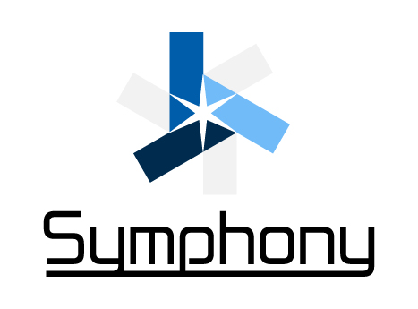

Apogy is a multi-mission software framework that simplifies the integration and operations of assemblies of space missions. Apogy provides a single tool that supports the operation cycle (development, test, execution and monitoring). Apogy exploits the Eclipse platform and modern model based software development tools and techniques such as the Eclipse Modeling Framework (EMF). This approach inherently promotes a highly modular and extendable software architecture that allows customization of functionalities with little effort. The usage of Eclipse provides state-of-the-art user interface experience that reflects today best user interface technologies.
For each system used, Apogy provides a single model that defines: command, telemetry, engineering units, limits, documentation, 3D topology and representation. System assemblies can then be created from these models to build different spacecraft and instrument configurations. The mission target environment can also be defined that includes maps (2D and 3D), location, annotations as well as location specific and time dependent model of the sky (sun, moon and stars). The framework provides basic operational plan editors that allow, through context switching, the tests and execution of plans in a seamless process. Teleoperations is supported through flexible hand controller mapping, camera displays with customizable overlays and image filtering, real-time map displays (2D and 3D). Apogy maintains rigorously contexts information such as the command and parameter used to generate the plan execution product, timing information and localization. Apogy then make use of these informations to provide the overall context of the operations and their products to the engineers and scientists.
In the last years, Apogy has been used in multiple deployments involving different types of rovers equipped with various sensors and instruments all operated through Apogy.
The objective is to develop a software framework for mission operations that allows to: